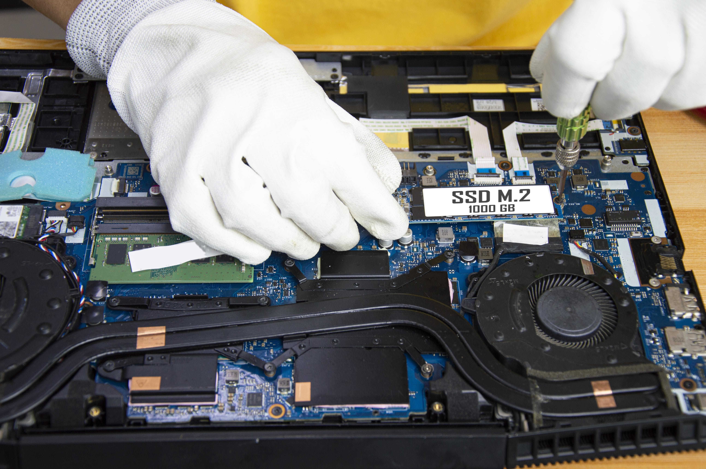

Deleted File Recovery
Exploring recovery options for accidentally deleted files, documents, photos and other important information.
Preparing your experience...
01 — DATA RECOVERY & RESTORATION
From accidentally deleted files to inaccessible storage devices, we help investigate data loss issues and explore possible recovery solutions to help you get your important information back.

Your Data Matters
02 — WHAT WE DO
Whether files have been accidentally deleted, a storage device has become inaccessible or data has been lost due to a system issue, we help investigate the problem and explore possible recovery options.
Exploring recovery options for accidentally deleted files, documents, photos and other important information.
Investigating hard drives, SSDs and external storage devices that are not detected, cannot be opened or have become inaccessible.
Assessing storage and file system issues to identify possible causes of data loss and determine suitable recovery options.
03 — COMMON DATA ISSUES
Data loss can happen unexpectedly, whether files are deleted, storage devices become inaccessible or file systems get damaged. We help identify the issue and explore possible recovery options.
04 — OUR APPROACH
Data recovery requires a careful and methodical approach. We start by understanding what happened to your files, assess the storage device and explore suitable recovery options while minimizing the risk of further data loss.
Discuss Your Data LossA careful approach to every recovery case
Reviewing the storage device, its condition and the circumstances surrounding the data loss.
Investigating file system errors, accidental deletion and other possible causes of inaccessible data.
Exploring suitable recovery methods based on the device condition and type of data loss.
Checking recovered files for accessibility and integrity before returning the available data.
05 — WHY NEXORA
Recovering lost data requires patience, careful assessment and an honest understanding of what may be possible. We focus on protecting your remaining data and explaining every available option.
We evaluate the storage device and circumstances of data loss before deciding on the next steps.
We explain possible recovery outcomes without promising results that cannot be guaranteed.
We explain the issue, available recovery options and any limitations in understandable language.
We prioritize careful handling of storage devices and checking the accessibility of recovered files.
GOT QUESTIONS?
Find answers to common questions about data recovery, lost files and storage device issues.
Still have questions? Contact us →We can assess recovery options for documents, photos, videos and other files lost due to accidental deletion, formatting or storage device issues. Available options depend on the device condition and cause of data loss.
It depends on the type and severity of the damage. We can assess the device and determine whether recovery may be possible. Physically damaged drives may require specialized recovery equipment or services.
Recovery time depends on the storage device, the amount of data involved and the complexity of the issue. We can provide a more realistic estimate after assessing the device.
In some cases, yes. Recovery may be possible if the deleted data has not been overwritten. Stop using the affected drive and avoid saving new files to it, as this can reduce the chances of recovery.
Stop using the device and avoid formatting it, running repair utilities or repeatedly reconnecting it. If the drive makes unusual noises or shows signs of physical damage, power it down and seek professional assessment.
08 — LET'S GET STARTED
Tell us what happened to your data and which storage device is affected. We'll help assess the situation and explore possible recovery solutions.
Request Data Recovery